Saludbox
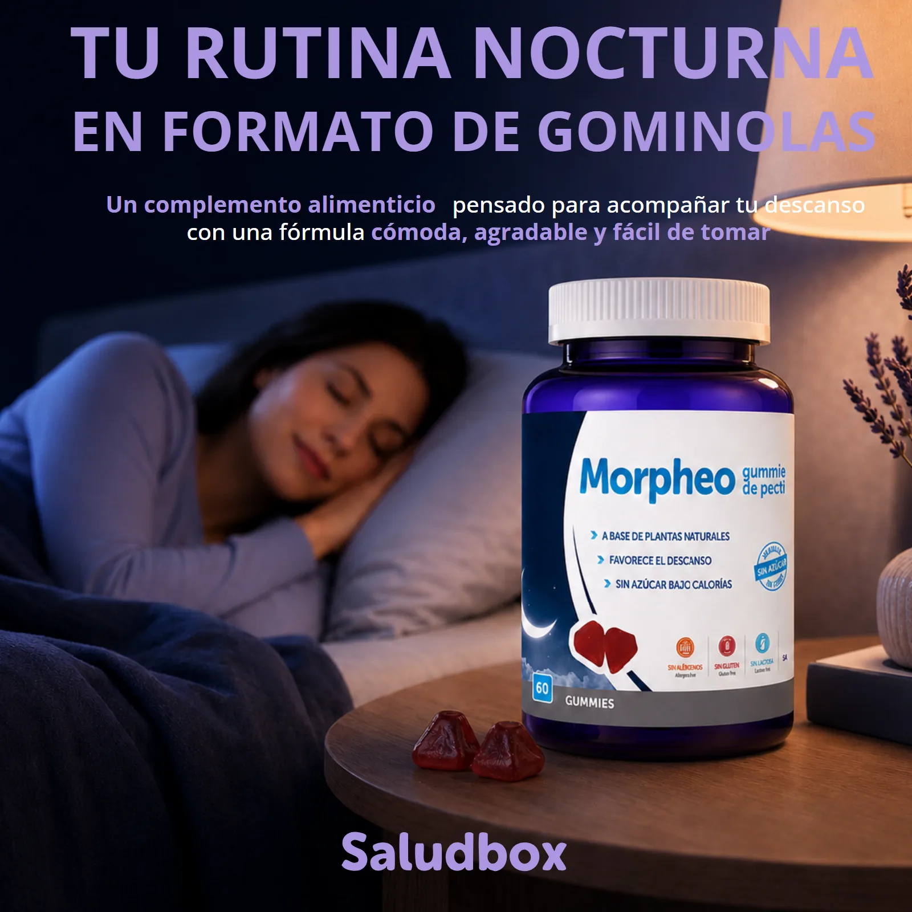
01 — ContextoEl punto de partida
Morpheo es melatonina en formato gominola. La categoría del descanso está llena de botes que se parecen entre sí, y la decisión se toma en la miniatura: si en dos segundos no se entiende qué es y para qué sirve, el comprador pasa al siguiente.
02 — TrabajoQué diseñé
Monté el listado alrededor de la rutina y no del producto: cuándo se toma, cómo se toma y qué se nota al día siguiente. Los activos —melatonina, valeriana, melisa, manzanilla, lavanda y ashwagandha— van uno a uno, con su porqué al lado. Y los sin —sin azúcar, vegano, sin gluten, sin lactosa, sin gelatina animal, sin conservantes— ocupan una imagen entera, porque en esta categoría son media compra.
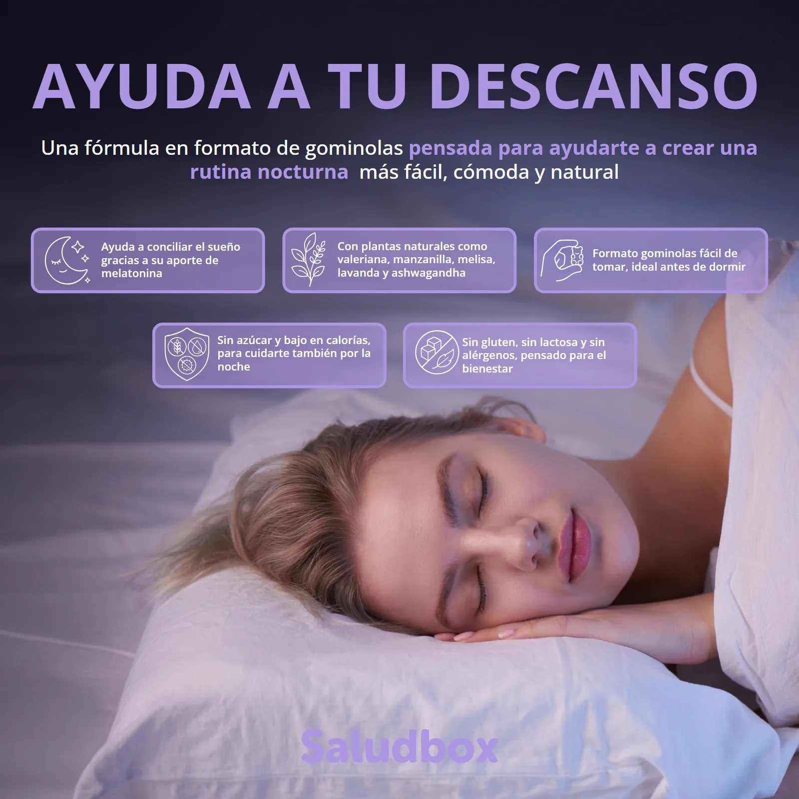
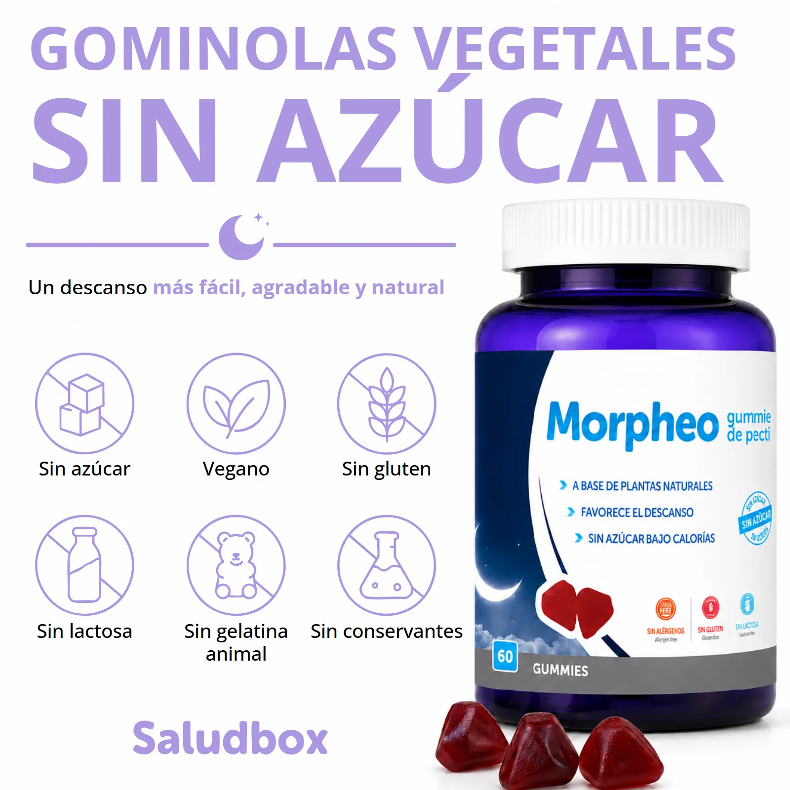
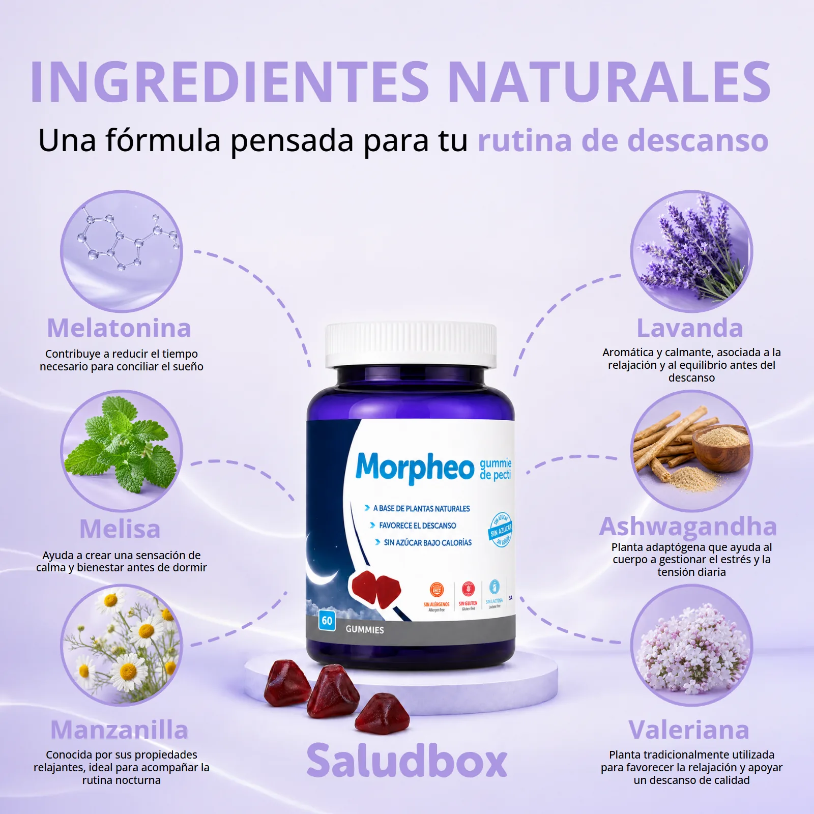
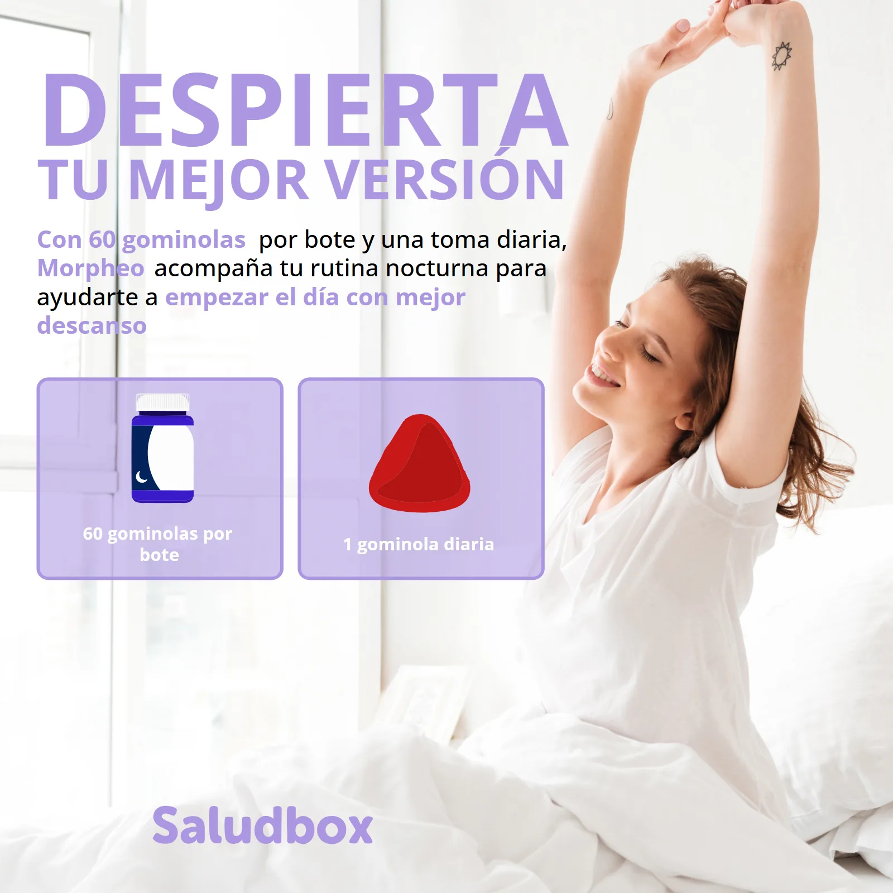
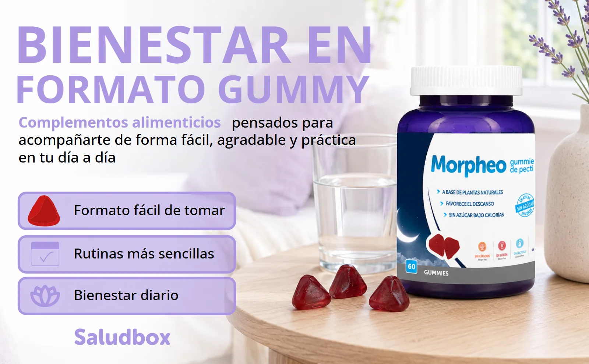
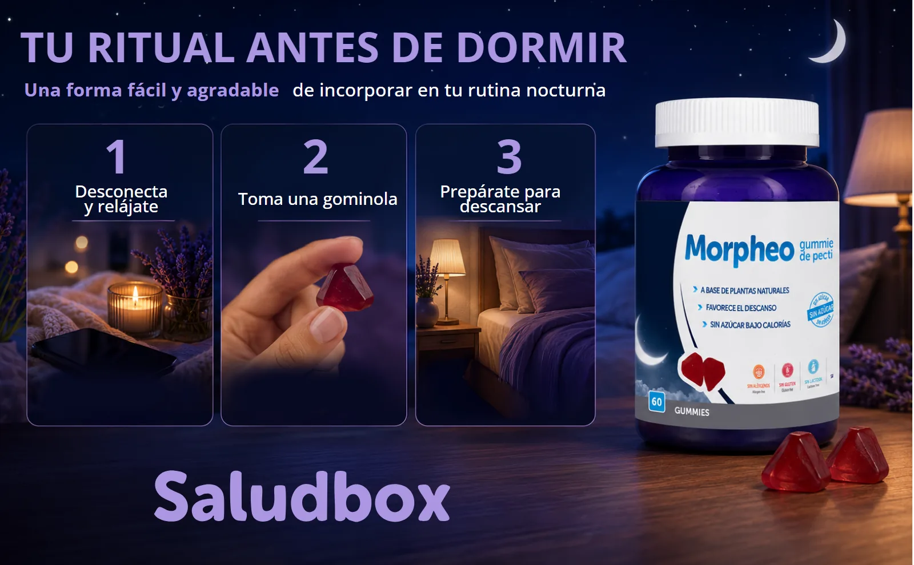
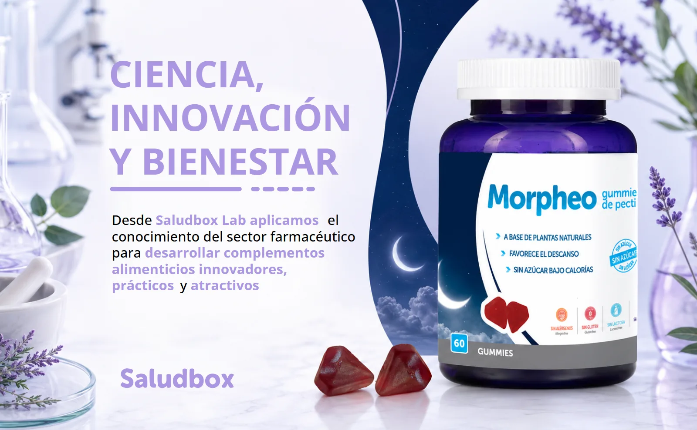
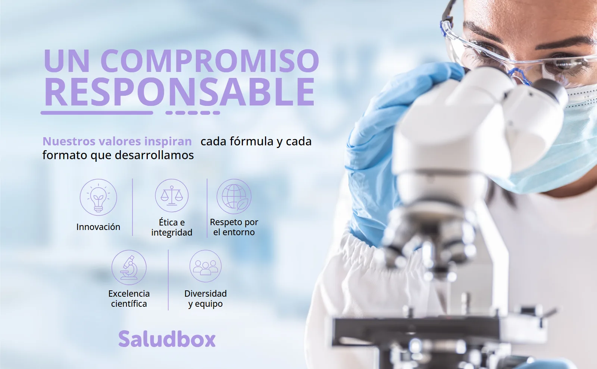
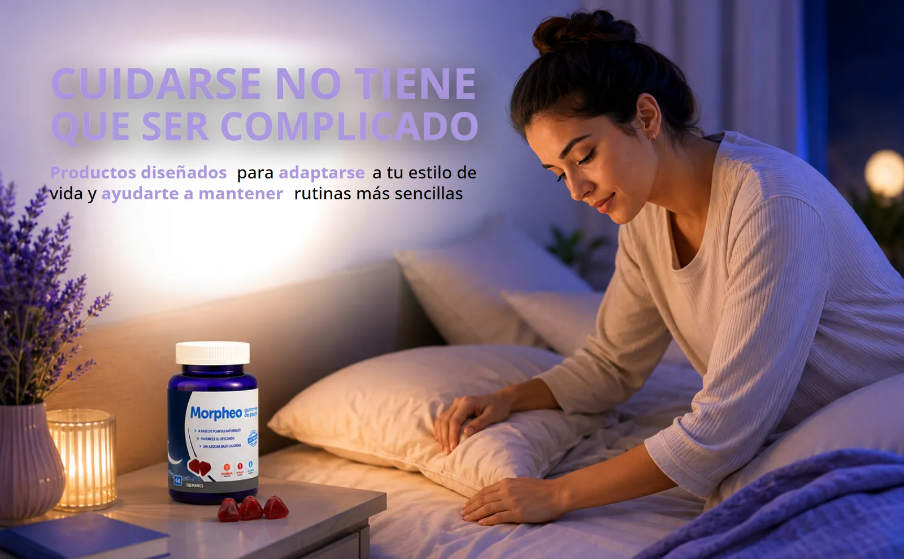
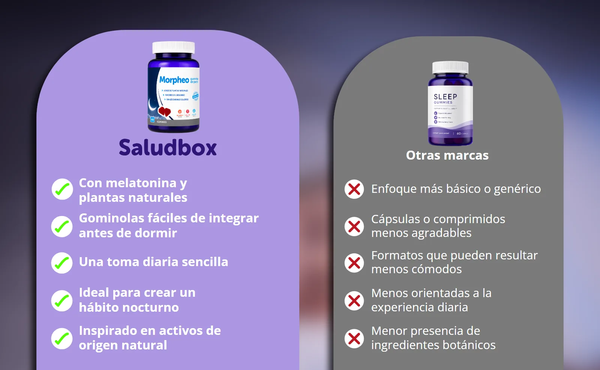
Un morado nocturno sostenido en las once piezas, del listado al A+. Una marca de descanso tiene que dar sueño al mirarla.